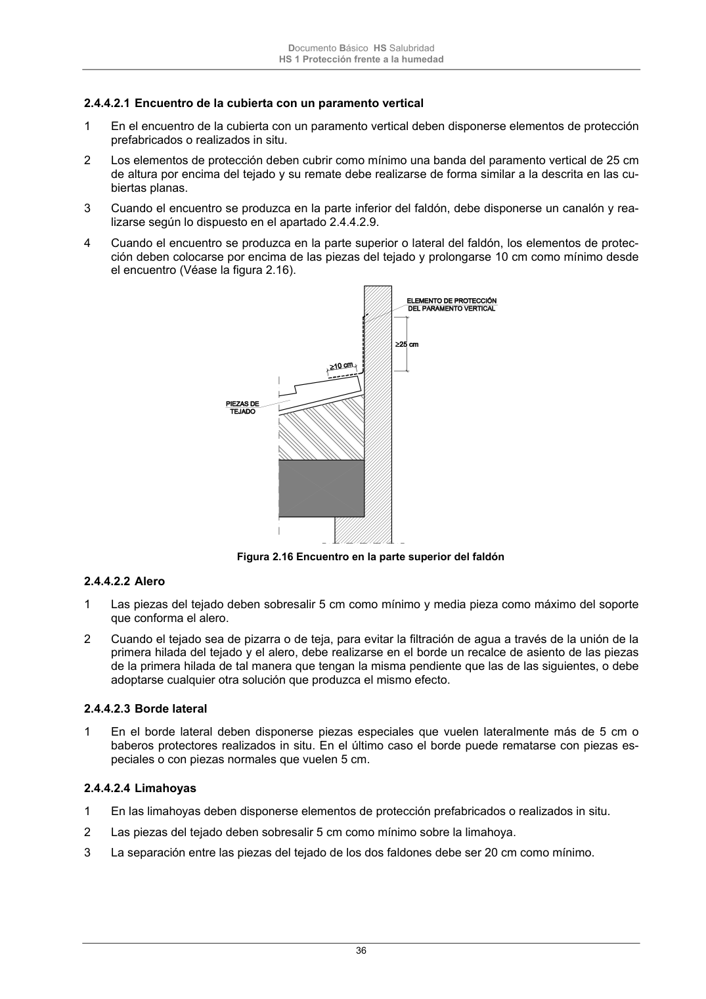

DB-HS Salubridad · edición 2022-06-14 · capa oficial
Documento DB-HS-oficial · SHA-256 del PDF 68df3caacc95f71aee2ec1ba7b2c65ae66155c21e3a8785521b8fdd4fd640d3b
Copia fiel del PDF fuente · Fuente oficial
Ficha de la disposición en la fuente oficial
Formatos: JSON del segmento · Markdown
2.4.4.1.9 Accesos y aberturas 1 Los accesos y las aberturas situados en un paramento vertical deben realizarse de una de las for- mas siguientes: a) disponiendo un desnivel de 20 cm de altura como mínimo por encima de la protección de la cubierta, protegido con un impermeabilizante que lo cubra y ascienda por los laterales del hue- co hasta una altura de 15 cm como mínimo por encima de dicho desnivel; b) disponiéndolos retranqueados respecto del paramento vertical 1 m como mínimo. El suelo has- ta el acceso debe tener una pendiente del 10% hacia fuera y debe ser tratado como la cubier- ta, excepto para los casos de accesos en balconeras que vierten el agua libremente sin ante- pechos, donde la pendiente mínima es del 1%. 2 Los accesos y las aberturas situados en el paramento horizontal de la cubierta deben realizarse disponiendo alrededor del hueco un antepecho de una altura por encima del la protección de la cu- bierta de 20 cm como mínimo e impermeabilizado según lo descrito en el apartado 2.4.4.1.2. 2.4.4.2 Cubiertas inclinadas 1 Deben respetarse las condiciones de disposición de bandas de refuerzo y de terminación, las de continuidad o discontinuidad, así como cualquier otra que afecte al diseño, relativas al sistema de impermeabilización que se emplee. Documento Básico HS Salubridad HS 1 Protección frente a la humedad 36
